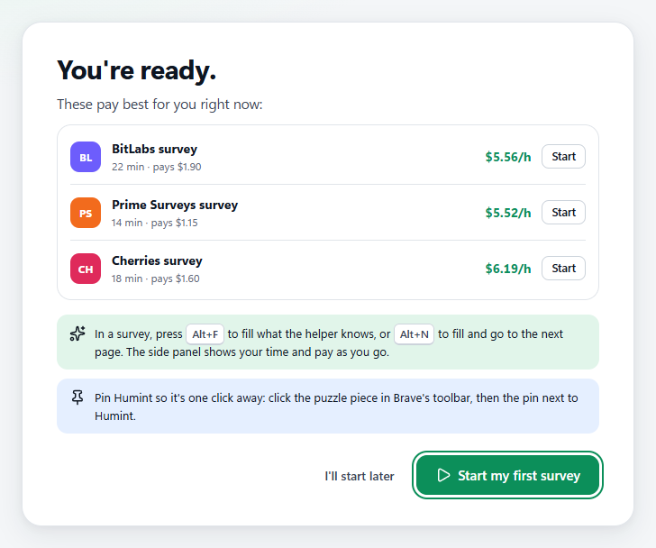
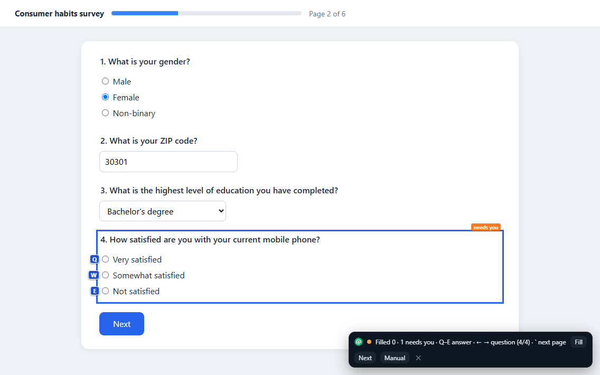
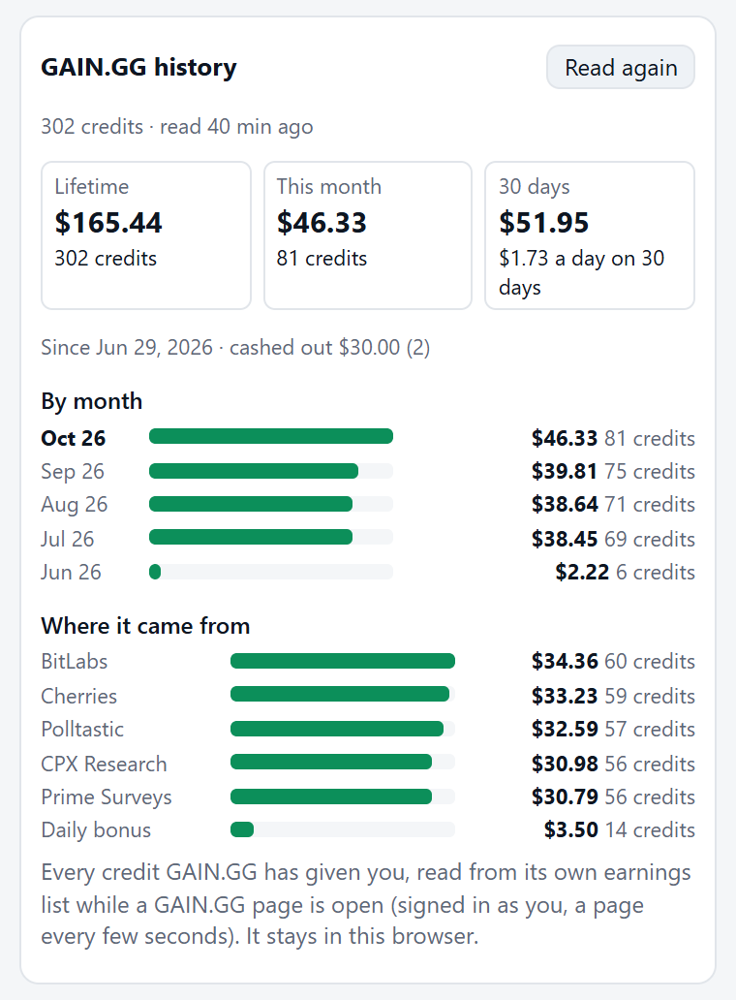

HUMINT human intelligence, sourced
AI can't do this part. You can.
AI is taking over more of the work done at a screen. What it can't make is a real person's opinion, judgment and experience, and that is exactly what surveys, studies and tests pay for. Humint is free tooling for selling your human intelligence, starting with paid surveys on GAIN.GG.
For Windows, Brave, Chrome and Edge. Your answers stay on your computer.

The idea
Work is changing. People still count.
A model can guess what people think. It can't be one. Every time a company tests a product, a researcher runs a study or an AI system needs its work checked, someone has to pay a person for an honest answer. That work is growing, and the people doing it deserve better tools than an open browser tab.
Being human is the product
What you sell is that the answers are really yours. Humint never fakes that: it fills in facts you gave it and leaves every judgment to you.
Tools for your side of the deal
Buyers of human answers have panels, dashboards and APIs. Humint gives the person answering the same: which work pays, what it really earns per hour, and less busywork.
Your record stays yours
Your profile, history and earnings live on your computer, not on our servers. As this kind of work grows, that record is what you bring with you.
Today
Less busywork. More paid minutes.
Surveys ask the same questions again and again, many screen you out, and pay is easy to lose track of. Humint takes care of all three.
Finds the surveys worth your time
Every survey on GAIN.GG and its survey walls in one list, highest rated first, with what each really pays you per hour once screen-outs are counted.
Fills what you've answered before
Age, ZIP, education, job… typed for you in every survey, from facts you gave it. What still needs you is outlined, and keyboard keys pick answers fast.
Tracks every cent
Each survey's time and the exact coins GAIN.GG paid for it, your whole GAIN.GG history month by month, your pace per hour, and how close you are to cashing out.


Download
Get Humint
Both are free and do the same helping. The app puts everything in one window; the extension adds it to the browser you already use.
Desktop app for Windows
One window for the whole workday: a browser with the helper beside each survey, your best surveys right now, and your money. A short setup gets you from nothing to your first survey in minutes.
Get it from Microsoft Store Download for WindowsFree · Windows 10 and 11 · installs and updates itself through the Store, with no warning from Windows
Version 3.9.1 · 93 MB · Windows 10 and 11 · nothing to install, just run it
Or download the .exe (version 3.9.1), which runs without installing.
Windows may say it "protected your PC", because the app isn't code-signed yet. Choose More info, then Run anyway. To check the file is ours, compare its checksum with the one on the release page.
Signed by . A brand-new version can still get "Windows protected your PC" for its first days: check that More info names , then choose Run anyway.
Browser extension
For Brave, Chrome and Edge on a computer. Fills, ranks and tracks right in your browser, with a side panel for your next survey and your money.
Add to your browserOr install it by hand from GitHub
- Download the extension (version 3.9.1) and unzip it into a folder you'll keep.
- Open
brave://extensionsorchrome://extensionsand turn on Developer mode. - Click Load unpacked and pick the folder. The setup opens by itself.
Keep the folder where it is: your browser ties the extension's saved data to it. To update, replace the files and press reload on the extension's card.
Every version and what changed: all releases on GitHub.
How it works
From nothing to your first survey in minutes
Download and run the setup
A short setup opens by itself: your GAIN.GG account (sign in with Google, Apple or Steam), a few profile questions, and how you want to be paid.
Start the best survey
Humint shows what pays best right now. In a survey, press Alt+F to fill what the helper knows, or Alt+N to fill and go on. You answer the rest.
Cash out
Coins show up as you finish surveys. Cash out on GAIN.GG in crypto, gift cards, a virtual Visa or PayPal; crypto and gift cards start around $1.
Roadmap
Starting with surveys. Building for what comes next.
Surveys are the biggest market for human answers today. They won't be the only one.
- Now
Paid surveys
GAIN.GG and all six of its survey walls in one ranked list, your facts filled in, every survey's time and pay recorded.
- Next
Studies and tasks
Paid interviews, product tests and small online tasks, found and tracked in the same place. Early support for User Interviews and Microworkers is already in the app.
- Later
A market for human intelligence
AI systems will need people to check their work, make judgment calls and supply real experience. Agents posting work for humans, people posting what they can do: Humint is building to be your side of that market.
Straight talk
What to expect
What it never does
- Make up answers or write them with AI. It fills facts you gave it, and reuses your own earlier answer when a question you've answered comes back.
- Answer attention checks or new questions for you. Those are always yours.
- Save your passwords.
- Send your profile or answers to us. They stay on your computer.
Keep your GAIN.GG account safe
- One account per person. Never a second one, never someone else's.
- No VPN, proxy or remote computer: GAIN.GG checks devices and networks.
- Answer honestly. Random or fake answers get rewards taken back.
How Humint stays free
If you make a new GAIN.GG account from Humint's setup, you join through our invite link. You get GAIN.GG's welcome bonus, and GAIN.GG pays us a referral bonus out of its own pocket. It never comes out of your earnings: every coin you earn is yours. The setup tells you this before anything opens. No ads, and your data is never sold. Humint isn't made by or affiliated with GAIN.GG.
Your data stays on your computer
Your profile, saved answers and survey history live on your computer, in the app or your browser. The app and the extension send us nothing, and we never sell or share data. This website counts visits and download clicks with GoatCounter, without cookies and without keeping anything that identifies you. Read the privacy policy.
Community
Join the people building it
Humint is early, and the people using it decide what it becomes.
Community token
$HUMINT
Humint's community token on Solana. Its creator fees fund Humint: development, growth, running costs, and rewards for the people testing it and reporting problems.
Contract address (CA)
Check the address before you buy: anyone can make a coin with the same name. The creator wallet is public on pump.fun.
Questions
Is it really free?
Yes. There's nothing to buy and no ads. It's paid for by GAIN.GG's referral bonus when someone makes a new account through our invite link, which costs them nothing.
Should I get the app or the extension?
The app if you're on Windows and want everything in one window: it has its own browser with the helper beside each survey, and it keeps your best surveys up to date in the background. The extension if you'd rather keep working in Brave, Chrome or Edge. You can use both and link them; surveys from both show as one history.
Does it answer surveys for me?
No. It fills in facts you gave it (like your age or ZIP code), the same way your browser fills in your address. Attention checks and anything new are yours to answer. If the same question comes back within 30 days, it can reuse your own last answer; you can turn that off. In Auto mode it can press Next once a page is fully answered, but never a final Submit.
What does "human intelligence" mean here?
The things only a person can supply: an honest opinion, a judgment call, real experience of using a product or living somewhere. AI can do a lot of work, but it can't be a person, so the companies and systems that need people pay for this. Humint helps you supply it efficiently, and get paid properly for it.
Why does Windows warn me about the app?
It doesn't if you get it from the Microsoft Store: Microsoft checks and signs the Store version, and it installs and updates like any other Store app. The .exe on GitHub is the same app without installing, and it isn't code-signed yet, so Windows SmartScreen may stop it: choose More info, then Run anyway. The .exe on GitHub is the same app without installing, signed by .
The app is signed by , so Windows can tell who made it. Windows SmartScreen can still stop a brand-new version for its first days, until enough people have run it. If it does, choose More info, check that the publisher is , then choose Run anyway.
The app isn't code-signed yet, so Windows SmartScreen doesn't know who made it and stops it the first time. Choose More info, then Run anyway.
To be sure a download is ours, get it only from this site or our GitHub releases, and compare its checksum with the one in SHA256SUMS.txt on the release page. In PowerShell: Get-FileHash .\Humint-3.9.1-portable.exe
Is it allowed on GAIN.GG?
Humint only types your own true facts and leaves every opinion to you. Follow GAIN.GG's rules (one account, no VPN, honest answers) and read its terms, since each site sets its own.
Do I need GAIN.GG?
The filling and tracking work on most survey sites. The setup, the ranked survey list and the exact pay for each survey are built around GAIN.GG.
How do I remove my data?
In the extension, open Options and choose "Erase all data", or uninstall it. For the app, delete the app and its data folder, %APPDATA%\Survey Helper. The Microsoft Store version: uninstall it in Settings → Apps, which removes the data it made, and delete that folder too if you used the .exe before.